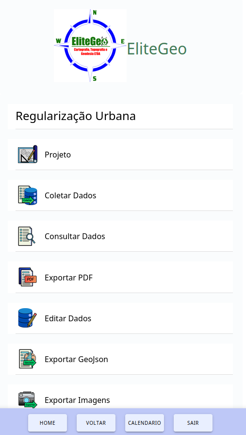
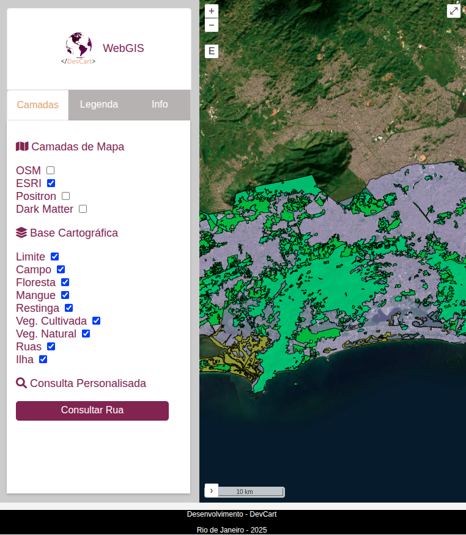
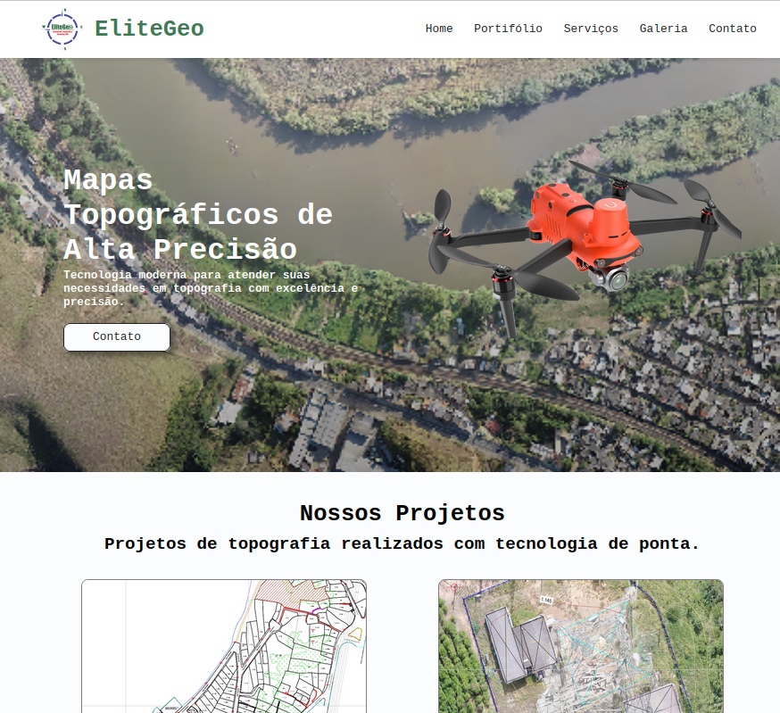
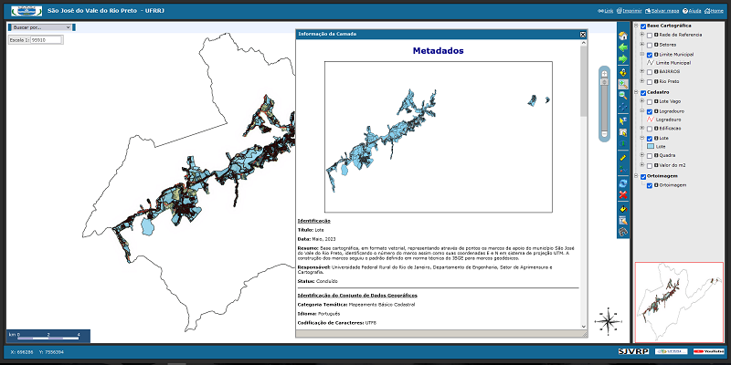
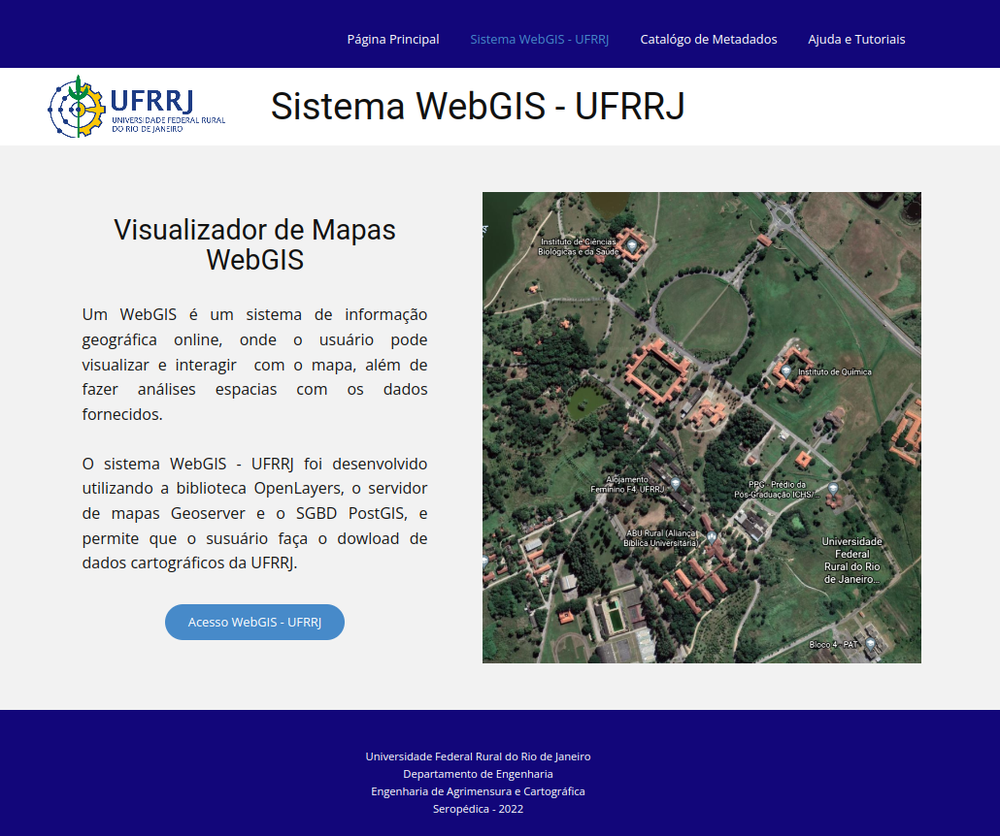

Engenheiro com 6 anos de experiência no desenvolvimento de sistemas.
email: vagneralmo@cos.ufrj.br
Baixar Currículo
Python
Java
PHP
SQL
HTML
CSS
Javascript
Typescript
C/C++
R
React
Node
Angular
Eclipse
Pycharm
NetBeans
Figma
MySQL
PostgreSQL/PostGIS
MariaDB
SQLite
Geoserver(Servidor)
Apache(Servidor)
MongoDB
ETL/ELT
Apache Spark
Apache Airflow
Docks
GIT/GitHub

Aplicativo Android para coleta de dados de Regularização Fundiária Urbana (Reurb). O aplicativo possui alta complexidade e realiza a coleta de dados socioeconômicos, geolocalização, captura de assinaturas digitais com validação por hash, além do registro de fotografias de fachadas e documentos. Ao final da coleta, o sistema gera automaticamente um relatório em PDF, que é armazenado no banco de dados da prefeitura responsável pelo projeto de regularização. O aplicativo também permite o envio de fotos diretamente do dispositivo e a atualização de todos os dados por meio de consultas SQL em um banco de dados SQLite.
Desenvolvemos uma plataforma interativa para visualizar, analisar e interpretar dados geoespaciais de forma eficiente, ideal para planejamento urbano, gestão ambiental e análise de mercado.


Desenvolvi um website exclusivo para a EliteGeo, projetado para destacar a excelência em geotecnologia e Regularisação Urbana. Descubra as soluções da empresa com a qualidade EliteGeo.
WebGIS de São José do Vale do Rio Preto, onde desenvolvemos uma plataforma robusta para simplificar o acesso e gestão de dados espaciais. Essa base sólida impulsiona projetos geoespaciais na região.


Projeto de Trabalho de Conclusão de Curso (TCC) focado no desenvolvimento de um sistema WebGIS para o compartilhamento de dados espaciais da universidade. Foram utilizadas a biblioteca OpenLayers, o servidor de mapas GeoServer e a extensão espacial PostGIS.
Atualmente trabalho como freelancer no desenvolvimento de sistemas e aplicativos para empresas, em sua maioria voltados à coleta de dados. Esses sistemas geralmente lidam com dados não estruturados, o que exige a aplicação de conceitos de engenharia de dados para um armazenamento adequado. Após o desenvolvimento do software, realizo a integração com bancos de dados NoSQL, como o MongoDB. Em seguida, os dados são processados utilizando Apache Spark, com foco na limpeza e no tratamento de imperfeições comuns, como valores ausentes, duplicidades e inconsistências. Após esse processamento, os dados são carregados em um banco de dados relacional PostgreSQL. Com os dados estruturados no ambiente relacional, utilizo a biblioteca Plotly, integrada ao framework Flask, para a criação de dashboards interativos de visualização. Em outros cenários, atuo exclusivamente no processamento de grandes volumes de dados, realizando todo o fluxo de ETL para posterior consumo por outros profissionais. No projeto de ..., é possível visualizar como esse pipeline costuma ser estruturado. (2024 -2025)
Atuei com geoprocessamento em um projeto de Cadastro Multifinalitário. Nesse projeto, fui responsável pelo desenvolvimento de algoritmos em Python para automatizar o processo de geração das quadras urbanas do município de São José do Vale do Rio Preto, integrando esses processos ao modelador do QGIS. Também fui encarregado de desenvolver o WebGIS do projeto, um Sistema de Informação Geográfica disponibilizado na web. Esse sistema utiliza a extensão espacial PostGIS para armazenar e publicar os dados do cadastro, permitindo o acesso e a visualização das informações geográficas de forma online. Além disso, o projeto foi desenvolvido de forma colaborativa, utilizando controle de versão com Git e GitHub, o que possibilitou o trabalho em equipe e a rastreabilidade das alterações no sistema. (2022 - 2023)
Trabalhei como estagiário de engenharia do IBGE. Nesse instituto fazia supervisão de formulários e memoriais para posterior atualização do banco de dados geodésico. Também fui encarregado de atualizar a base cartográfica 1:250000, a mais utilizada por empresas e profissionais. Participei de coletas de dados e de Verificação de marcos - VRF. Lá, utilisava sistema o terminal do windows para processar dados de gravimetria. (2017 - 2018)
Trabalhei como pesquisador voluntário em um projeto de Iniciação Científica na UFRRJ. A pesquisa foi relacionada ao aumento da violência entre os alunos da instituição. Na época, crimes como invasões aos dormitórios para furtos de computadores, celulares e outros objetos vinham se intensificando. Diante desse cenário, foi proposto o desenvolvimento de um sistema de informação voluntário para registrar ocorrências em um banco de dados e disponibilizá-las na web por meio de um Sistema de Informação Geográfica Voluntária (VGI), construído a partir do framework Geocrimes. No sistema, o usuário criava uma conta e cadastrava ocorrências de crimes que sofreu ou das quais teve conhecimento. Após o registro, as informações eram armazenadas com seus respectivos metadados e exibidas em um mapa com geolocalização, utilizando a API do Google Maps. Tal sistema, foi proposto para ser usado como ferramenta para a guarda universitária. (2016 - 2017)
Participei em diversos projetos como auxiliar e como engenheiro de meneira informal. Entre eles reflorestamento, levantamento de dados de topografia para estradas, construção civil, loteamento. (2017 - 2024)
Matemática (em curso) - UNIRIO
Mestrado Engenharia de Sistemas e Computação - Coppe/UFRJ (2024) - Incompleto
Engenharia de Agrimensura e Cartográfica - UFRRJ (2023)
Analise e Desenvolvimento de Sistemas - UNINTER (2022)
Técnico em Automação Industrial - SENAI
Técnico Agrícola - CEAJSJR
Ingles - B2
Alemão - A1
Trabalho publicado no Congresso de Cadastro Multifinalitário e Gestão Territorial. Título: AUTOMAÇÃO NO PROCESSO DE CODIFICAÇÃO DE QUADRAS E LOTES UTILIZANDO O MODELADOR GRÁFICO DO QGIS E LINGUAGEM DE PROGRAMAÇÃO PYTHON
Baixar Artigo
Trabalho publicado no Congresso Brasileiro de Cartografia. Título: SISTEMA CRIMINAL RURAL: SISTEMA WEB PARA COLETAR INFORMAÇÃO GEOGRÁFICA VOLUNTÁRIA NA ÁREA DE SEGURANÇA PÚBLICA
Baixar Artigo
Elaboração de Designs de websites
Programação de sites
Programação de sistemas Web
Construção de Mapas físico, políticos e geográficos
Consultoria
Mapeamento e Regulariação Urbana
Construção de Mapas topográficos
Serviços de Machine learning
Estratégia de ciência de dados
Serviços de Visualização de dados
Soluções de Análise preditiva
Previsões com base em séries históricas
Desenvolvimento de Aplicações WebGIS
Construção de sistemas de IA
Estudo de avaliação Imobiliária
Mineração de dados
Sistema de Informação Geográfica
Desenho Digital